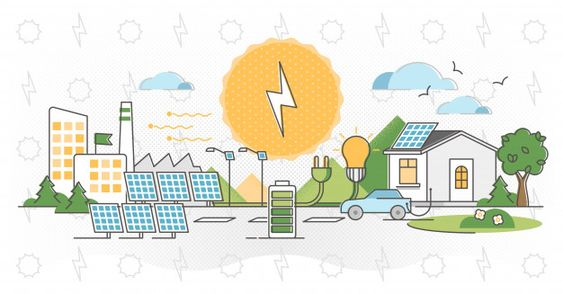
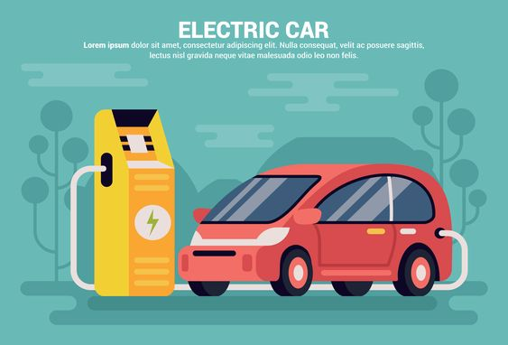
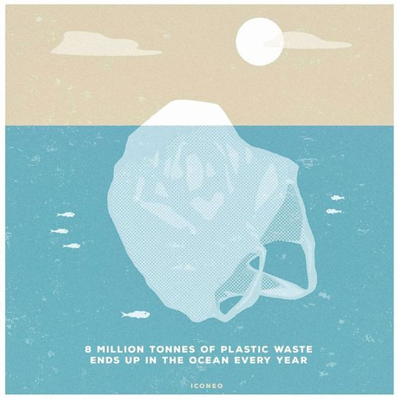
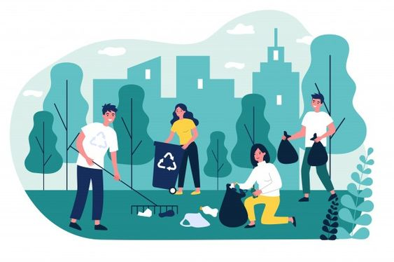

Pannelli solari
investimento importante
Un investimento importante riguarda l’uso dei pannelli solari, una scelta molto ecosostenibile. C’è anche chi sceglie di affidarsi ai bio architetti per farsi costruire una casa che rispetta l’ambiente e la salute. Una scelta condivisibile e importante questa che magari non tutti possono permettersi. Bisogna considerare però che l’installazione dei pannelli solari diventa sempre più alla portata di tutti. Viene usata l’energia del sole, 100% rinnovabile!
Auto Elettriche
no al gasolio
L’automobile inquina, le emissioni dannose inquinano l’ambiente e ci fanno ammalare. Sicuramente un’idea molto più sostenibile è abbandonare definitivamente l’automobile per muoversi a piedi, con i mezzi pubblici o in bicicletta. Questo però non è sempre possibile. Una scelta sensata è quella di abbandonare l’automobile a gasolio e prendere l’auto elettrica.
Consumo della carne
prediligere alimentazione vegetariana
Innanzitutto, lo sfruttamento dei terreni destinati ai pascoli.
Ogni anno per fare spazio agli allevamenti, decine di migliaia di ettari vengono disboscati, diminuendo la produzione globale naturale di ossigeno.
Il consumo di acqua è probabilmente il secondo problema per importanza.
Le risorse idriche utilizzate per la produzione dei mangimi e per gli stessi allevamenti sono infatti innumerevoli. Nonostante l’acqua sia uno degli elementi più presenti sul nostro pianeta, le sue riserve non sono illimitate.
Per non parlare poi delle atrocità degli allevamenti intensivi :(
Evitare di utilizzare plastica monouso
no all'usa e getta
Per diminuire il consumo di plastica “usa e getta” è consigliato non utilizzare cannucce, buste, piatti, posate e bicchieri di plastica. Essi sono sostituibili con prodotti che svolgono le stesse funzioni, ma fabbricati con materiali alternativi come il vetro, la ceramica o il ferro. Inoltre a maggio del 2019 è stata approvata dall’Unione Europea una Direttiva La Direttiva SUP, un intervento normativo dell’Unione Europea che dal 2021 vieta l’utilizzo di determinati prodotti in plastica monouso per i quali esistono alternative in commercio.
Riciclo
riciclare e fare la raccolta differenziata
Avviare i rifiuti al riciclo è una pratica importante per risparmiare risorse naturali e materie prime, inquinare meno e preservare l'ambiente, ma anche per creare attività lavorative utili al benessere delle comunità e del pianeta. Quando si è all’aria aperta, in città, in campagna, in montagna o in spiaggia occorre fare attenzione ed evitare di abbandonare i rifiuti. Tutti dovrebbero impegnarsi in prima persona per mantenere pulito l’ambiente in viviamo, raccogliendo i rifiuti prodotti e riciclandoli.
